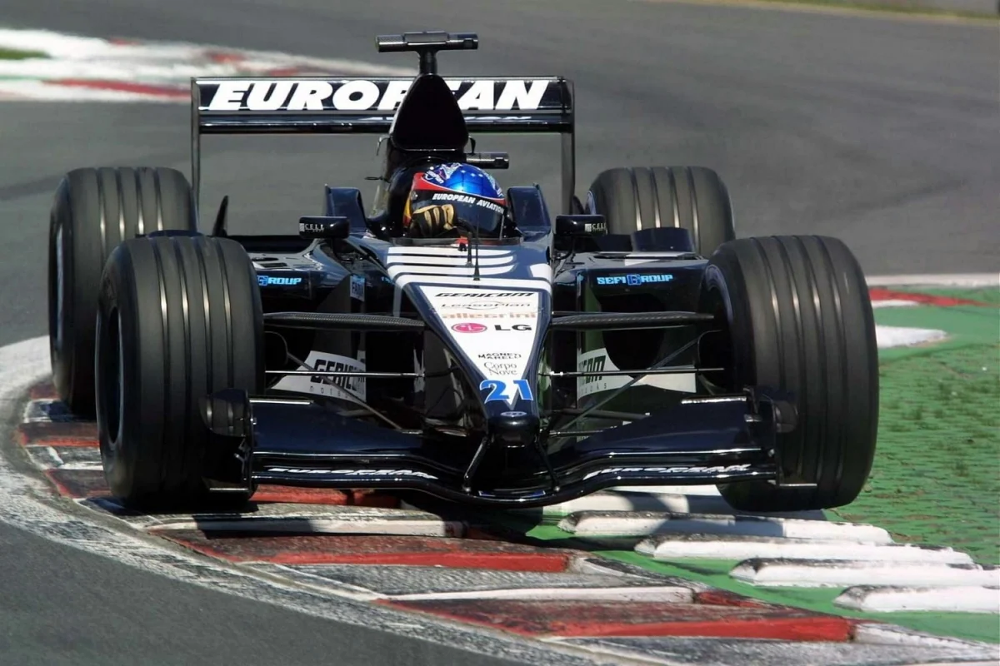
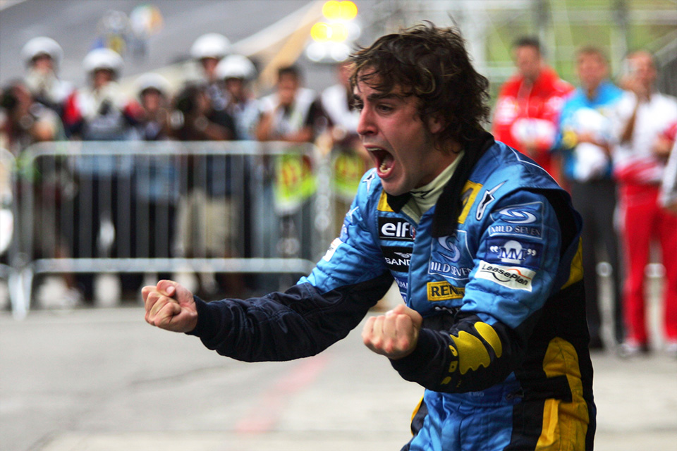
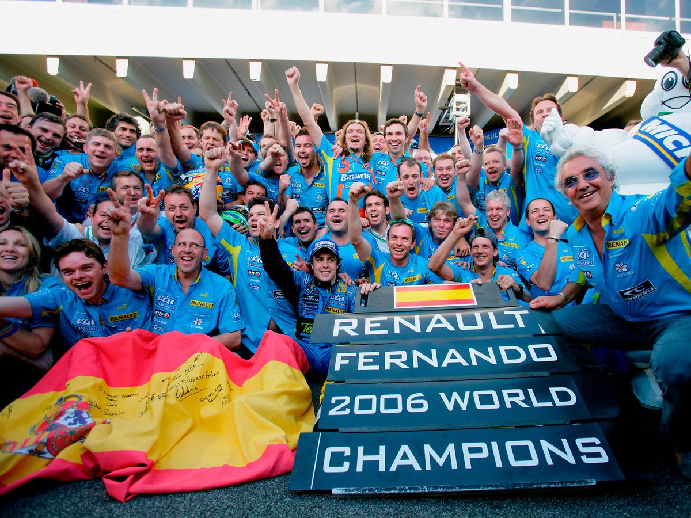
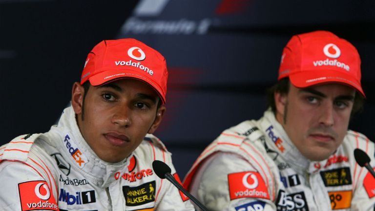

Pero
Cual ha sido su trayectoria?
Debutó en 2001 con la escuderia Minardi, donde apenas pudo hacer nada, ya que era de los peores equipos de la parrilla.
En 2003 debutó con Renault, en donde consiguó su primera pole position en Malasia y su primer victoria en el GP de Hungria.
En 2005 tuvo una batalla contra Kimi Raikkonen, piloto de Finlandia, por el campeonato de pilotos, en la que el piloto asturiano salió victorioso con 15 Podios, 7 victorias y 6 Poles, ganando el titulo en el GP de Brasil.
En 2006 volveria a batallar por el mundial, esta vez su contrincante era el siete veces campeón del mundo, Michael Scumacher.
Fue una batalla trepidante hasta el final, pero Fernando Alonso volvió a ganar el campeonato con 14 podios, 7 victorias y 6 poles.
En 2007 fichó por McLaren, en donde su mayor contrinacnte fue su própio compañero, el debutante Lewis Hamilton.
Ambos fueron victimas del famoso Spygate, que provocó que Mclaren fuera descalificada del mundial de constructores
